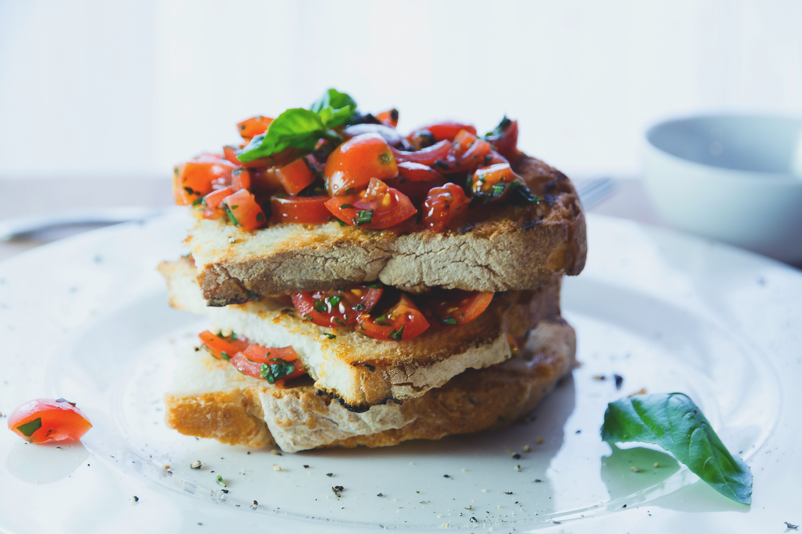
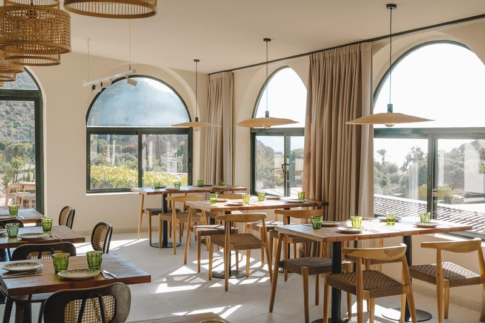
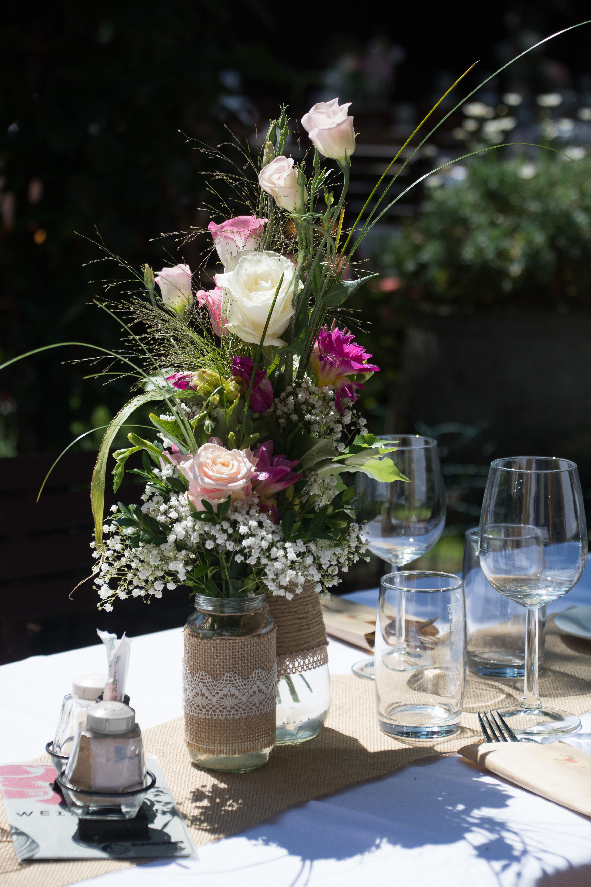
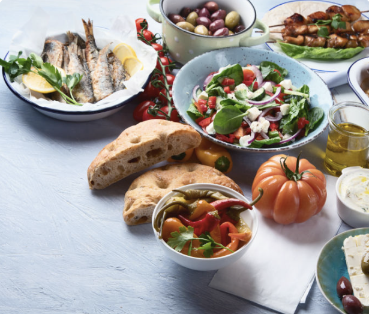

01
LES PRODUITS
Au rythme
des saisons.
Des légumes colorés, des herbes aromatiques et des ingrédients qui inspirent une cuisine fraîche et pleine de caractère.
L'esprit de la Méditerranée
Des produits de saison, des assiettes généreuses et le plaisir de se retrouver autour d'une belle table. Une cuisine inspirée du Sud, imaginée pour prendre le temps de savourer.

L'ESPRIT MAISON OLIVE
Inspirée des tables méditerranéennes, notre philosophie célèbre les bons produits, les recettes simples et ces repas qui donnent envie de rester un peu plus longtemps.
LES PRODUITS
Des légumes colorés, des herbes aromatiques et des ingrédients qui inspirent une cuisine fraîche et pleine de caractère.
LA CUISINE
Des recettes d'inspiration méditerranéenne où les bons ingrédients et les associations équilibrées sont à l'honneur.
L'ACCUEIL
Un univers chaleureux imaginé pour un déjeuner entre amis, un dîner à deux ou un repas en famille.
L'ART DE RECEVOIR
Des matières naturelles, des couleurs douces et le charme des repas qui s'étirent. L'identité de Maison Olive évoque une Méditerranée généreuse et authentique.

Des tons chaleureux, des formes organiques et une simplicité assumée.

Olive, terre cuite, crème et nuances de sable.

Une identité pensée autour de la convivialité et des moments partagés.
INFORMATIONS PRATIQUES
Sur le site d'un véritable restaurant, retrouvez ici les renseignements essentiels avant de vous déplacer.
L'adresse et les indications d'accès seront ajoutées lorsque les informations de l'établissement seront confirmées.
Adresse non renseignéeLes jours d'ouverture et les horaires de service devront être validés par le restaurant avant publication.
Horaires à confirmerUn établissement réel pourrait proposer une réservation par téléphone ou à l'aide d'un service dédié.
Aucune réservation réelleLes informations concernant l'accès, les équipements et les besoins particuliers restent à vérifier.
Informations à confirmerLES QUESTIONS FRÉQUENTES
Quelques réponses aux questions que les visiteurs peuvent se poser avant de découvrir un restaurant.
Dans le concept Maison Olive, la carte est imaginée autour des produits de saison. Pour un établissement réel, les plats proposés et leur disponibilité doivent être confirmés.
Cette démonstration ne permet pas de réserver. Un site réel pourrait proposer un numéro de téléphone ou un outil de réservation en ligne.
Les ingrédients et allergènes doivent être confirmés par l'établissement. En cas d'allergie, demandez toujours des informations précises au restaurant avant de commander.
Pour un restaurant réel, les conditions d'accueil des groupes, les menus éventuels et les modalités de réservation seraient communiqués par l'équipe.
UN CONCEPT CRÉÉ PAR STUDIO WEB
Cette démonstration montre comment une présentation visuelle soignée peut mettre en valeur un restaurant, présenter sa carte et faciliter l’accès aux informations pratiques.
Maison Olive est une marque fictive. Aucun restaurant réel n'est associé à cette page et aucune réservation n'est proposée.